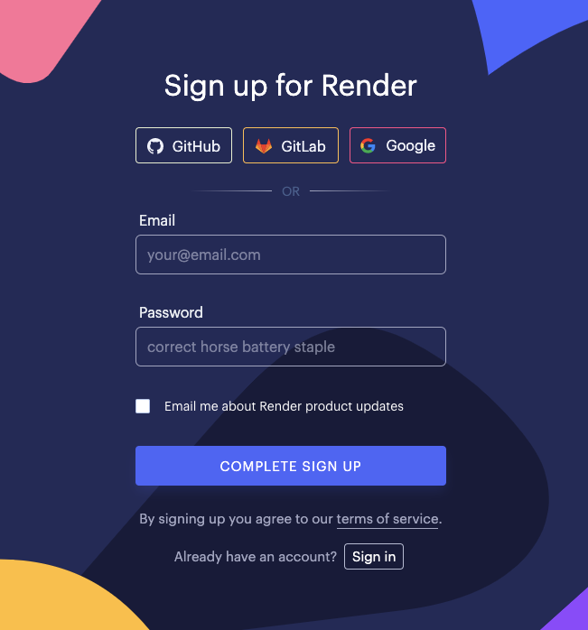
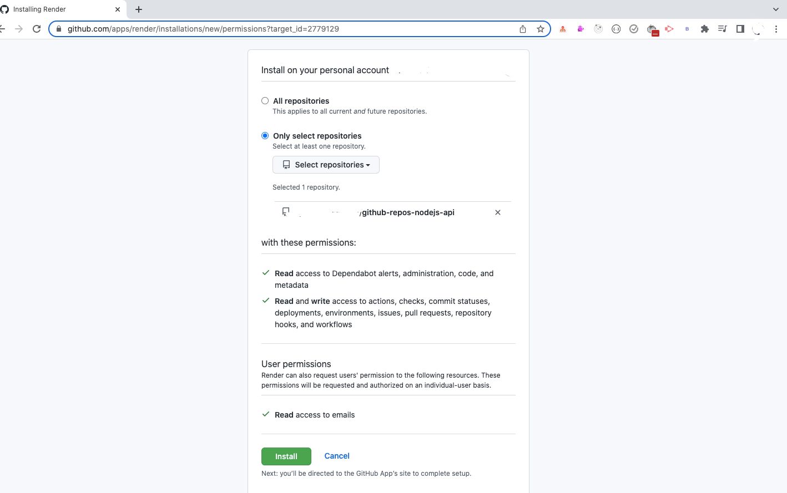

Sample Nodejs Project Run in Vs Code
- Go to the NodeJS website and download NodeJS
- Make sure Node and NPM are installed and their PATHs
defined
- Assuming I have node and npm properly installed on the machine, I would
- Sample Nodejs Proejct DownloadDownload
- Extract the folder.
- Folder open in Vs code
- Open Terminal ( ctrl+shift+backtick)
- After that, run the application by entering the below command
- npm start
- Run your server
- Now, launch your browser and visit http://localhost:8080/
How to Deploy an App to Render from a GitHub Repository
- Create a free account on render
- After completing all processes now login to your account.
- Click on the “Create new app”.
- Select GitHub as a method. It will show a “Connect to GitHub” option where we add provide
our GitHub repository.
- 
- Once signed up and logged in to your account, you will see a dashboard like this:
-
- To deploy a Node.js application, click on the
New Web Service button under the Web Services
option.
-
You can also click on the
New + button displayed in the header just before your profile picture and select Web Service option.
-
Once clicked, you will see the following screen:
- Next, click on the
Select repositories button displayed below the option and select the GitHub repository which you want to deploy.
-
Once selected, you will see the following screen displaying the selected repository.
-

- Click on the green
Install button to give access to the selected repository to the Render website.
- Once clicked, you will be redirected to your dashboard where you will see your selected repository as shown below:
.png)
- Now, click on the Connect button and you will see the following screen:


- Add Environment Variable


- Now, you can click on the the
Create Web Service button to start the deployment process.

Thanks for reading!üôÇüôÇ